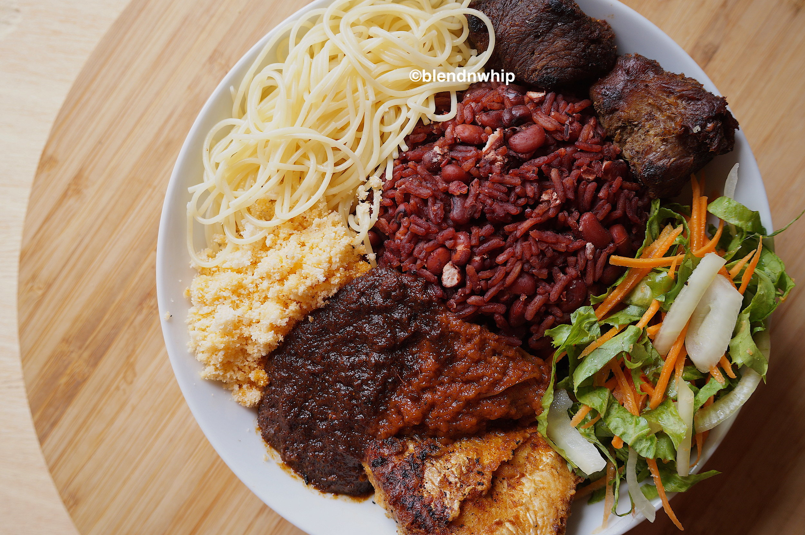

HOME
Deliciously cooked waakye

Description
Waakye should be made Ghana’s national dish. I am yet to come across anyone who does not like waakye. I truly do. Surprisingly, waakye is just a simple side dish of rice and beans cooked with dried millet stalk leaves.
Ingredients
- Dried millet leaves
- beans
- Rice
Steps
- Pour over a litre of water into a saucepan together with the millet leaf stalks. Put on high heat to boil. The millet stalk leaves will start omitting its colour and the water will start turning into a deep wine colour.
- Rinse the soaked beans and add to the boiling water. Cover and let it cook till tender. Mean while rinse the rice till the water is cleared. Add the washed rice into the saucepan together with salt to taste. (You might need to add more water.) Add water if needed. Stir and cover tightly
- Do not remove the millet stalk leaves. When the rice boils over, reduce heat and simmer till the water is absorbed and the rice is cooked through. Rest for three to five minutes, remove millet stalk leaves and fluff with a fork.
Go to the top